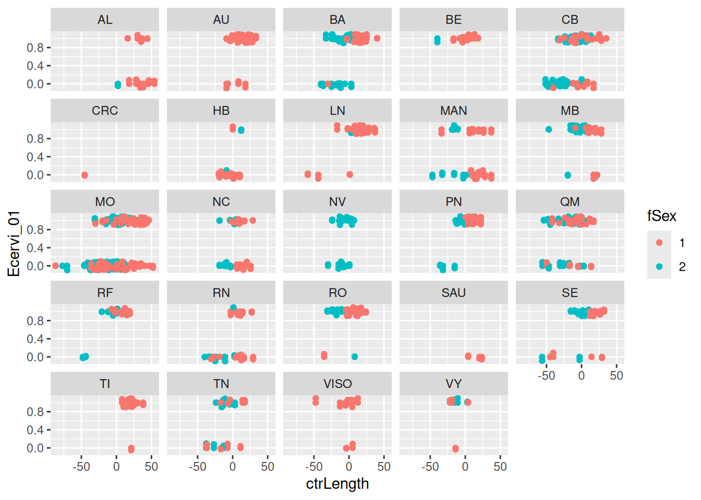

Code
library(nimble)NIMBLE Alaska ASA 2026 Workshop
nimbleSMC package)Sex (M/F) and (centered) body Length are explanatory variables (fixed effects).Farm is a random effect.library(nimble)DeerEcervi <- read.table(file.path("..", "examples", "DeerEcervi",
"DeerEcervi.txt"), header = TRUE)
summary(DeerEcervi) Farm Sex Length Ecervi
Length:826 Min. :1.000 Min. : 75.0 Min. : 0.00
Class :character 1st Qu.:1.000 1st Qu.:151.0 1st Qu.: 0.00
Mode :character Median :1.000 Median :163.0 Median : 6.60
Mean :1.458 Mean :161.8 Mean : 45.42
3rd Qu.:2.000 3rd Qu.:174.9 3rd Qu.: 35.79
Max. :2.000 Max. :216.0 Max. :2186.60 ## Create presence/absence data from counts.
DeerEcervi$Ecervi_01 <- DeerEcervi$Ecervi
DeerEcervi$Ecervi_01[DeerEcervi$Ecervi > 0] <- 1
## Set up naming convention for centered and uncentered
## lengths for exercises later
DeerEcervi$unctrLength <- DeerEcervi$Length
## Center Length for better interpretation
DeerEcervi$ctrLength <- DeerEcervi$Length - mean(DeerEcervi$Length)
## Make a factor version of Sex for plotting
DeerEcervi$fSex <- factor(DeerEcervi$Sex)
## Make a factor and id version of Farm
DeerEcervi$fFarm <- factor(DeerEcervi$Farm)
DeerEcervi$farm_ids <- as.numeric(DeerEcervi$fFarm)ggplot(data = DeerEcervi, mapping = aes(x = ctrLength, y = Ecervi_01,
color = fSex)) + geom_point() + geom_jitter(width = 0, height = 0.1) +
facet_wrap(~Farm)
fSex is 1 for males, 2 for females.
DEcode <- nimbleCode({
for (i in 1:2) {
# Priors for intercepts and length coefficients for
# sex = 1 (male), 2 (female)
sex_int[i] ~ dnorm(0, sd = 1000)
length_coef[i] ~ dnorm(0, sd = 1000)
}
# Priors for farm random effects and their standard
# deviation.
farm_sd ~ dunif(0, 20)
for (i in 1:num_farms) {
farm_effect[i] ~ dnorm(0, sd = farm_sd)
}
# logit link and Bernoulli data probabilities
for (i in 1:num_animals) {
logit(disease_probability[i]) <- sex_int[sex[i]] + length_coef[sex[i]] *
length[i] + farm_effect[farm_ids[i]]
Ecervi_01[i] ~ dbern(disease_probability[i])
}
})Build the model. It is an R object.
Build the MCMC.
Compile the model and MCMC.
Run the MCMC.
Extract the results.
More about NIMBLE’s MCMC workflows is shown in this figure (also available as pdf).
DEconstants <- list(num_farms = 24, num_animals = 826, length = DeerEcervi$ctrLength,
sex = DeerEcervi$Sex, farm_ids = DeerEcervi$farm_ids)
DEmodel <- nimbleModel(DEcode, constants = DEconstants)Defining modelBuilding modelRunning calculate on model
[Note] Any error reports that follow may simply reflect missing values in model variables.Checking model sizes and dimensions [Note] This model is not fully initialized. This is not an error.
To see which variables are not initialized, use model$initializeInfo().
For more information on model initialization, see help(modelInitialization).These can be provided at the nimbleModel step (above) or now:
DEmodel$setData(list(Ecervi_01 = DeerEcervi$Ecervi_01))
# This sets the values and *flags the nodes as data*.
DEinits <- function() {
list(sex_int = c(0, 0), length_coef = c(0, 0), farm_sd = 1,
farm_effect = rnorm(24, 0, 1))
}
set.seed(123)
DEmodel$setInits(DEinits())DEmcmc <- buildMCMC(DEmodel, enableWAIC = TRUE)===== Monitors =====
thin = 1: farm_sd, length_coef, sex_int
===== Samplers =====
RW sampler (29)
- sex_int[] (2 elements)
- length_coef[] (2 elements)
- farm_sd
- farm_effect[] (24 elements)This can be done in one step or two. We’ll use two.
cDEmodel <- compileNimble(DEmodel)Compiling
[Note] This may take a minute.
[Note] Use 'showCompilerOutput = TRUE' to see C++ compilation details.# First call to compileNimble in a session is slower than
# later calls.
cDEmcmc <- compileNimble(DEmcmc, project = DEmodel)Compiling
[Note] This may take a minute.
[Note] Use 'showCompilerOutput = TRUE' to see C++ compilation details.DEresults <- runMCMC(cDEmcmc, niter = 11000, nburnin = 1000,
WAIC = TRUE)running chain 1...|-------------|-------------|-------------|-------------|
|-------------------------------------------------------|
[Warning] There are 4 individual pWAIC values that are greater than 0.4. This may indicate that the WAIC estimate is unstable (Vehtari et al., 2017), at least in cases without grouping of data nodes or multivariate data nodes.# Samples
samples1 <- DEresults$samples# WAIC (Note: there are different flavors of WAIC that can
# be chosen earlier.)
WAIC <- DEresults$WAICThere are many packages for summarizing and plotting MCMC samples. NIMBLE does not try to re-invent these wheels.
mcmcplots# Run this code if you want to generate your own results.
# They won't over-write results that come with these
# slides.
library(mcmcplots)
mcmcplot(samples1, dir = ".", filename = "Ecervi_samples_mcmcplot")WAICnimbleList object of type waicNimbleList
Field "WAIC":
[1] 797.7232
Field "lppd":
[1] -376.2234
Field "pWAIC":
[1] 22.63819Results that comes with these slides are here.
Results if you generated your own will be here.
coda# We haven't provided coda figures, but you can make make
# them if you want.
library(coda)
pdf("Ecervi_samples_coda.pdf")
plot(as.mcmc(samples1))
dev.off()Results if you generate the coda pdf will be here.
Let’s review again the MCMC workflows in NIMBLE (also available as pdf).
nimbleMCMCStart from:
set.seed(123)
DEdataAndConstants <- c(DEconstants, list(Ecervi_01 = DeerEcervi$Ecervi_01))
samples2 <- nimbleMCMC(DEcode, constants = DEdataAndConstants,
inits = DEinits, niter = 10000, nburnin = 1000, nchains = 2,
samplesAsCodaMCMC = TRUE, WAIC = TRUE)Defining model [Note] Using 'Ecervi_01' (given within 'constants') as data.Building modelSetting data and initial valuesRunning calculate on model
[Note] Any error reports that follow may simply reflect missing values in model variables.Checking model sizes and dimensionsChecking model calculationsCompiling
[Note] This may take a minute.
[Note] Use 'showCompilerOutput = TRUE' to see C++ compilation details.running chain 1...|-------------|-------------|-------------|-------------|
|-------------------------------------------------------|running chain 2...|-------------|-------------|-------------|-------------|
|-------------------------------------------------------|
[Warning] There are 4 individual pWAIC values that are greater than 0.4. This may indicate that the WAIC estimate is unstable (Vehtari et al., 2017), at least in cases without grouping of data nodes or multivariate data nodes.summary(samples2$samples) ## from coda
Iterations = 1:9000
Thinning interval = 1
Number of chains = 2
Sample size per chain = 9000
1. Empirical mean and standard deviation for each variable,
plus standard error of the mean:
Mean SD Naive SE Time-series SE
farm_sd 1.75416 0.367024 2.736e-03 0.0097819
length_coef[1] 0.03954 0.006953 5.182e-05 0.0001458
length_coef[2] 0.07591 0.009874 7.360e-05 0.0002442
sex_int[1] 0.95918 0.423000 3.153e-03 0.0369590
sex_int[2] 1.58901 0.453549 3.381e-03 0.0420598
2. Quantiles for each variable:
2.5% 25% 50% 75% 97.5%
farm_sd 1.16358 1.49469 1.71433 1.96740 2.59974
length_coef[1] 0.02622 0.03483 0.03949 0.04417 0.05336
length_coef[2] 0.05699 0.06919 0.07566 0.08274 0.09578
sex_int[1] 0.10916 0.67570 0.97327 1.23370 1.79298
sex_int[2] 0.68415 1.29076 1.59991 1.89229 2.46292samples2$WAICnimbleList object of type waicNimbleList
Field "WAIC":
[1] 797.9959
Field "lppd":
[1] -376.2619
Field "pWAIC":
[1] 22.73601mcmc$run”Start from:
cDEmcmc$run(niter = 11000, nburnin = 1000)|-------------|-------------|-------------|-------------|
|-------------------------------------------------------|samples3 <- as.matrix(cDEmcmc$mvSamples)
summary(samples3) farm_sd length_coef[1] length_coef[2] sex_int[1]
Min. :0.9102 Min. :0.01571 Min. :0.03993 Min. :-0.3854
1st Qu.:1.5053 1st Qu.:0.03486 1st Qu.:0.06988 1st Qu.: 0.7338
Median :1.7344 Median :0.03969 Median :0.07645 Median : 1.0138
Mean :1.7786 Mean :0.03956 Mean :0.07661 Mean : 1.0034
3rd Qu.:1.9842 3rd Qu.:0.04415 3rd Qu.:0.08330 3rd Qu.: 1.2726
Max. :4.2144 Max. :0.06289 Max. :0.11277 Max. : 2.5444
sex_int[2]
Min. :-0.03404
1st Qu.: 1.35775
Median : 1.64610
Mean : 1.64103
3rd Qu.: 1.93166
Max. : 3.18392 cDEmcmc$getWAIC() [Warning] There are 4 individual pWAIC values that are greater than 0.4. This may indicate that the WAIC estimate is unstable (Vehtari et al., 2017), at least in cases without grouping of data nodes or multivariate data nodes.nimbleList object of type waicNimbleList
Field "WAIC":
[1] 797.9185
Field "lppd":
[1] -376.0928
Field "pWAIC":
[1] 22.8664readBUGSmodel will read BUGS/JAGS model code and variables from their standard file formats.